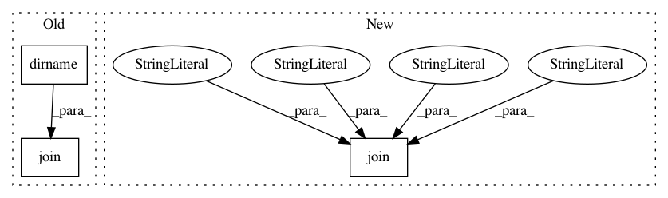

5393d3d2617feeced529922eef6908a2a79982f2,lxmls/big_data_em/preprocess.py,,,#,6
Before Change
import pickle
corpus = pcc.PostagCorpus()
input_data = path.join(
path.dirname(__file__),
"../../data/train-02-21.conll")
train_seq = corpus.read_sequence_list_conll(input_data, max_sent_len=15, max_nr_sent=1000)
pickle.dump((corpus.word_dict, corpus.tag_dict), open("word_tag_dict.pkl", "w"))
After Change
import pickle
corpus = pcc.PostagCorpus()
input_data = os.path.join(os.path.dirname(__file__), "..", "..", "data", "train-02-21.conll")
train_seq = corpus.read_sequence_list_conll(input_data, max_sent_len=15, max_nr_sent=1000)
pickle.dump((corpus.word_dict, corpus.tag_dict), open("word_tag_dict.pkl", "w"))
In pattern: SUPERPATTERN
Frequency: 3
Non-data size: 3
Instances
Project Name: LxMLS/lxmls-toolkit
Commit Name: 5393d3d2617feeced529922eef6908a2a79982f2
Time: 2017-06-09
Author: pedro.balage@priberam.pt
File Name: lxmls/big_data_em/preprocess.py
Class Name:
Method Name:
Project Name: nilmtk/nilmtk
Commit Name: 0037bf2ef173d8e7dabf3e71c9c4783424e855d0
Time: 2018-09-09
Author: 10246101+PMeira@users.noreply.github.com
File Name: nilmtk/dataset_converters/greend/convert_greend.py
Class Name:
Method Name: convert_greend
Project Name: mne-tools/mne-python
Commit Name: f8d2ce12fef6db5f8ec35d978797249ec3937a17
Time: 2020-06-08
Author: larson.eric.d@gmail.com
File Name: mne/io/tests/test_pick.py
Class Name:
Method Name: